1.0 Design Elements {#SDD001}
The rpmget package provides a convenient baseline configuration and example for managing an arbitrary set of binary rpm packages with optional support for creating the canonical rpm build tree and pkg repository.
SW Dependencies
The primary runtime dependencies are httpx, tqdm, and cerberus, where cerberus provides the runtime validation for the active user configuration file. Complete package dependencies are shown in the figure below:
{kind=link}

Rpmget Software Units (captured from mermaid to SVG or PNG).
rpmget_dependency_graph source
rpmget dependency graph showing primary software units. graph TB
subgraph id1[rpmget Dependencies]
subgraph id2[Python Packages]
A(rpmget)
B(httpx)
C(tqdm)
D{cerberus}
end
end
A ==> B & C
A -.-> D
D -.-> A
Design decisions
Higher-level API approach (httpx and tqdm) first, minimizing LoC where possible. Maximize use of the ConfigParser ExtendedInterpolation and custom validator.
flexible ConfigParser configuration format
baseline config file validation via argument
httpx download client with progress display
Make sure self-test and user-initiated validation always tries to use provided configuration first, before falling back to the builtin example.
1.1 SDD002 {#SDD002}
Configuration Format
Any INI structured text file acceptable to ConfigParser and within the following constraints. See the default config for examples.
Extended Interpolation is enabled, variable style is ${VAR}
Empty lines in values are NOT supported
Inline comments are also NOT supported
The current design supports only URLs starting with http|https and ending with ‘.rpm’.
The downloader should iterate over any URL values that match this definition.
src/rpmget/__init__.py(line 134)
Parent links: REQ002
1.2 SDD003 {#SDD003}
Validation Rules
In addition to the ConfigParser checks, all configurations should be checked by the validate function using a simple validation schema and URL parsing based on the following rules. See the default config for an example.
the [rpmget] section must exist, any others are optional
the [rpmget] section must contain at least the following required keys
‘repo_dir’: the directory for rpm package repository (can be empty)
‘top_dir’: the directory where rpms are downloaded
‘layout’: either ‘flat’ (single directory) or ‘tree’
‘pkg_tool’: either ‘rpm’, ‘yum’, or ‘dnf’
the config must contain at least one valid URL string value ending with ‘.rpm’
src/rpmget/__init__.py(line 269)
Parent links: REQ004, REQ006
1.3 SDD004 {#SDD004}
Initiating Validation Checks
User access to the validation checks should have multiple knobs, eg, a user-facing CLI argument, the existing self-test cmd, or prior to actually using a given configuration file.
src/rpmget/rpmget.py(line 49)src/rpmget/rpmget.py(line 103)
Parent links: REQ003, REQ005
1.4 SDD005 {#SDD005}
Downloaded artifact layouts
The software should provide at a minimum two choices how artifacts are arranged, starting with the following styles:
flat: all rpm files in a single directory
tree: the standard rpmbuild tree
The latter rpmbuild layout should also contain the standard .rpmmacros
file with default contents.
src/rpmget/__init__.py(line 165)src/rpmget/__init__.py(line 173)
Parent links: REQ006, REQ007
1.5 SDD006 {#SDD006}
Main processing flow
Processing flow in pseudo-code:
validate_config
if not
top_dirthen create_layoutfind rpm urls in config
for each valid url:
make subdir from arch suffix
download rpm to arch dir